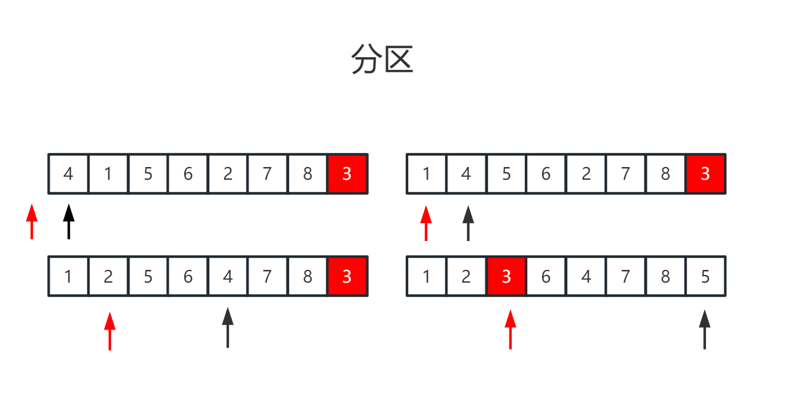
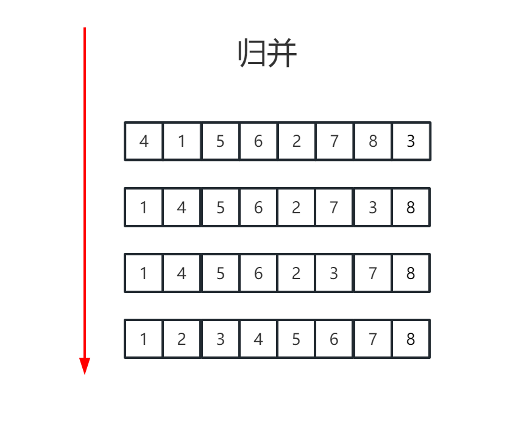

排序是非常基础并且重要的算法，目前常见的排序算法有插入排序、冒泡排序、堆排序、计数排序、归并排序和快速排序等。
下面介绍计数排序、归并排序、快速排序。
计数排序是一种线性时间的整数排序算法。如果数组的长度为
n，整数范围（数组中最大值和最小值的差值）为K，若k远小于n，则计数排序的时间效率会远小于插入、归并排序等。如对公司员工的年龄进行排序，就可以考虑计数排序。
排序思想
统计数组中每个数字出现的次数，然后按照数字从小到大的顺序依次填充到数组中去。
k为3；4（k+1）的数组Array，在对应数组的位置存放每个值出现的次数。比如值2则存放到位置1，值3则存放到位置2，值4则存放到位置3，值1则是位置0；代码实现
fun countSortArray(array: IntArray) { //获取最大值和最小值 var maxValue = Int.MIN_VALUE var minValue = Int.MAX_VALUE array.forEach { maxValue = Math.max(maxValue, it) minValue = Math.min(minValue, it) } //利用最大值和最小值准备空数组 ， 并且存放对应值的出现的次数 val snapArray = IntArray(maxValue - minValue + 1) array.forEach { val index = it - minValue val snapCount = snapArray[index] snapArray[index] = snapCount + 1 } //依次读取数组，进行值排序 var index = 0 for (i in snapArray.indices) { val value = snapArray[i] var count = value while (count > 0) { array[index++] = i + minValue count-- } }}时间复杂度：数组的长度为n，整数范围为k，所以时间复杂度为O(n+k)。
空间复杂度：需要创建一个长度为（k+1）的数组进行辅助，所以控件复杂度为O(K)。
示例
存在两个数组arr1和arr2，arr2中的每一个数组都唯一且是arr1中的数字。要求arr1中的数字要按照arr2进行相对排序。如果数组arr1中存在arr2中没有的数字，则按照递增的顺序排在后面。设定数组中的数字均在1000范围内。
列如：arr1是[2 , 3 , 3 , 7 , 3 , 9 , 2 , 1 , 7 , 2]，arr2是[3 , 2 , 1]。则排序的结果为[3 , 3 , 3 , 2 , 2 , 2 , 1 , 7 , 9]。
分析：1000范围内，所以k即为1000，考虑计数排序。之后现根据数组arr2输出，然后按照大小输出。
xfun countSortArrayQuestion(array1: IntArray, array2: IntArray) { //根据差值 计算每个数字出现的频率 val diffValue = 1000 val snapArray = IntArray(diffValue + 1) array1.forEach { val index = it val snapCount = snapArray[index] snapArray[index] = snapCount + 1 } var index = 0 //首先排序arr2中存在的 array2.forEach { val value = snapArray[it] var count = value while (count > 0) { array1[index++] = it count-- } //清空 snapArray[it] = 0 } //剩余排序 for (i in snapArray.indices) { val value = snapArray[i] var count = value while (count > 0) { array1[index++] = i count-- } }}快速排序是一种非常高效的排序算法，当表现良好时，快速排序的速度要比其他主要对手（归并排序）快2～3倍。
排序过程
上述过程递归的话可以做如下表示
xxxxxxxxxxfun fastSortArray(array: IntArray) { fastSortArray(array, 0, array.size - 1)}fun fastSortArray(array: IntArray, start: Int, end: Int) { if (end > start) { //分区 val pivot = partition(start, end, array) //pivot 支点 已排序的位置已经固定 所以可以越过它 继续排序 fastSortArray(array, start, pivot - 1) fastSortArray(array, pivot + 1, end) }}接下来就是对分区的理解，随机选取中间值，以中间值的大小将数组分为左右两部分。下面以数组【4，1，5，3，6，2，7，8】来进行解析。

步骤4的核心目的是将第一步移动到数组最后的中间值移动到中间位置。
如此就完成了一个分区的过程，用代码则可以进行如下表示：
xxxxxxxxxxfun partition(start: Int, end: Int, array: IntArray): Int { //随机选取中间值 val randomPivot = Random(System.currentTimeMillis()).nextInt(end - start + 1) + start //将该值交换到数组末尾 swap(array, randomPivot, end) var small = start - 1 for (i in start until end) { //找到一个比末尾值小的值，进行交换 if (array[i] < array[end]) { small++ swap(array, small, i) } } //将末尾的值交换到中间 这样比它小的都在它的左边，比他大的都在他的右边。 small++ swap(array, small, end) return small}//交换fun swap(array: IntArray, position1: Int, position2: Int) { if (position1 != position2) { val temporary = array[position1] array[position1] = array[position2] array[position2] = temporary }}时间复杂度：如果每次选取的中间值都在排序数组的中间位置，则快速排序的时间复杂度为O(nlogn)，但是如果每次选取的中间值都是排序数组的头部或者尾部，那么快速排序的时间复杂度为O(n^2)。这也就是随机选取的原因，所以再随机选取的前提下，快排的平均时间复杂度为O(nlogn)。
空间复杂度：快速排序是递归调用的，故上述代码的空间复杂度即为递归调用深度，所以平均空间复杂度为O(nlogn)。
示例：
从一个乱序数组中找出第k大的数字。例如，数组[3，1，2，4，5，5，6]中第3大的数字是5。
解法1:最小堆解法
思路：确保最小堆的容量为K，每次从数组中读取一个数字时都和堆顶的元素进行比较，如果比堆顶的元素大，则移除堆顶元素并且将该元素添加到最小堆之中。
代码
xxxxxxxxxxfun kthLargestValue(array: IntArray, k: Int): Int { val minPriorityQueue = PriorityQueue<Int>() array.forEach { if (minPriorityQueue.size < k) { minPriorityQueue.add(it) } else if (minPriorityQueue.peek() < it) { minPriorityQueue.poll() minPriorityQueue.add(it) } } return minPriorityQueue.peek()}时间复杂度为O(nlogk)，空间复杂度为O(k)。
解法2:利用分区解
解法1适用于数据都位于一个数据流之中，且无法一次性全部读入内存之中。
在长度为n的排序数组之中，第k大的值在数组中的位置为（n-k）。
思路：
代码：
xxxxxxxxxxfun kthLargestValueByPartition2(array: IntArray, k: Int): Int { val kIndex = array.size - k var start = 0 var end = array.size - 1 var index = partition(start, end, array) while (kIndex != index) { if (kIndex > index) { start = index + 1 } else { end = index - 1 } index = partition(start, end, array) } return array[index]}归并排序也是基于分治法的排序算法，为了排序长度为n的数组，需要先排序长度为n/2的字数组，然后合并这两个排序字数组于是整个数组也就排序完毕。
排序过程

以数组[4，1，5，6，2，7，8，3]为例子，进行排序说明。如上图所示：
归并排序需要创建一个和原数组相同大小的数组，用来保存排序之后的结果，所以其空间复杂度为O(n)。
代码表示
xxxxxxxxxxfun mergeIntoSort(array: IntArray): IntArray { val length = array.size var src = array var dst = IntArray(length) //合并相邻序列的数组，从1开始 var sequence = 1 while (sequence < length) { //循环数组 按照序列进行 子数组排序 var start = 0 while (start < length) { val middle = min(sequence + start, length) val end = min(sequence * 2 + start, length) var i = start var j = middle var k = start //字数组 具体的排序过程 while (i < middle || j < end) { if (j == end || (i < middle && src[i] < src[j])) { dst[k++] = src[i++] } else { dst[k++] = src[j++] } } start += sequence * 2 } //交换数组 主要是防止真正的排序是 dst和src指向同一个数组 val temp = src src = dst dst = temp //下一个序列 sequence += sequence } return src}时间复杂度：长度为n的数组每次都被拆分为n/2，所以归并排序的时间复杂度为O（nlogn）。
空间复杂度：需要长度为n的额外辅助数组，所以归并排序的空间复杂度为O（n）。
为什么快速排序比归并排序要快？
从上述的时间复杂度我们可以看出，归并时间复杂度固定为O（nlogn），快排的平均时间复杂度才为O（nlogn）。为什么大家常用的是快速排序而不是归并排序呢？
主要是因为归并排序的不是原地排序算法。归并排序的合并过程需要对多个数组进行操作，而快速排序只需要进行简单的元素比较和交换操作。这意味着归并排序的常数复杂度可能比快速排序高。所以大部分情况下快排会更快，且不需要额外的空间。
示例：链表排序
输入一个链表的头节点，请将该链表排序。
例如输入的是：[3 -> 5 -> 1 -> 4 -> 2 -> 6] 输出的则是：[1 -> 2 -> 3 -> 4 -> 5 -> 6]。
如何实现？
快排？快速排序算法首先随机生成一个下标，并以该下标对应的值作为中间值进行分区。如果输入的是数组，那么只需要O（1）的时间就能根据下标找到一个数字。但如果输入的是链表，那么需要O（n）的时间才能根据节点的编号找到对应的节点。
归并？归并排序的主要思想是将链表分成两个子链表，在对两个子链表排序后再将它们合并成一个排序的链表。所以可行
如下所示：
xxxxxxxxxxfun sortListNodeByMergeInto(node: ListNode?): ListNode? { if (node == null || node.next == null) { return node } val middleNode = findMiddleNodeAndSplit(node) val node1 = sortListNodeByMergeInto(node) val node2 = sortListNodeByMergeInto(middleNode) return merge(node1, node2)}上述代码中的函数findMiddleNodeAndSplit将链表分成两半并返回后半部分链表的头节点。再将链表分成两半后分别递归地将它们排序，然后调用函数merge将它们合并起来。接下来讨论函数findMiddleNodeAndSplit和merge的实现细节。
findMiddleNodeAndSplit用快慢双指针的思路将链表分成两半。如果慢指针一次走一步，快指针一次走两步，当快指针走到链表尾部时，慢指针只走到链表的中央，这样也就找到了链表后半部分的头节点。
xxxxxxxxxxfun findMiddleNodeAndSplit(node: ListNode): ListNode? { var slowPointer: ListNode? = node var quickPointer: ListNode? = node.next while (quickPointer != null && quickPointer.next != null) { slowPointer = slowPointer?.next quickPointer = quickPointer.next!!.next } val second = slowPointer?.next slowPointer?.next = null return second}merge也可以用两个指针分别指向两个排序子链表的节点，然后每次选择其中值较小的节点。与合并数组不同的是，不需要另外一个链表来保存合并之后的节点，而只需要调整指针的指向。
xxxxxxxxxxfun merge(node1: ListNode?, node2: ListNode?): ListNode? { val dummy = ListNode() var newNode: ListNode? = dummy var leftNode = node1 var rightNode = node2 while (leftNode != null && rightNode != null) { if (leftNode.value < rightNode.value) { newNode!!.next = leftNode leftNode = leftNode.next } else { newNode!!.next = rightNode rightNode = rightNode.next } newNode = newNode.next } newNode!!.next = leftNode ?: rightNode return dummy.next}